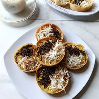

Resep Kue Bandung Coklat Keju
🍽️ Deskripsi

🛠️ Alat
- Mangkuk
- Sendok
- Whisk atau pengocok
- Teflon atau wajan
- Spatula
- Parutan keju
- Piring
🥣 Bahan
- 250 gram tepung terigu
- 50 gram gula pasir
- 1 butir telur
- 300 ml air
- 1/2 sendok teh garam
- 1/2 sendok teh baking powder
- 1/2 sendok teh soda kue
- 1 sendok makan margarin
- Coklat meses secukupnya
- Keju parut secukupnya
- Susu kental manis secukupnya
👨🍳 Tutorial Pembuatan
- Campurkan tepung terigu, gula, garam, dan baking powder ke dalam mangkuk.
- Tambahkan telur dan air sedikit demi sedikit sambil diaduk hingga adonan halus.
- Diamkan adonan selama kurang lebih 30 menit.
- Tambahkan soda kue lalu aduk hingga tercampur rata.
- Panaskan teflon dengan api kecil dan olesi sedikit margarin.
- Tuangkan adonan ke dalam teflon dan ratakan.
- Masak hingga muncul lubang-lubang kecil pada permukaan adonan.
- Taburkan gula, coklat meses, dan keju parut.
- Tambahkan susu kental manis secukupnya.
- Lipat kue menjadi dua dan olesi bagian luarnya dengan margarin.
- Potong menjadi beberapa bagian dan sajikan.
Klik Tombol untuk melihat Daftar Pesanan!